|
TAP-plugins Tom's Audio Processing plugins for audio engineering on the Linux platform |
|
[ TAP AutoPanner ] [ TAP Chorus/Flanger ] [ TAP DeEsser ] [ TAP Dynamics (Mono & Stereo) ] [ TAP Equalizer and TAP Equalizer/BW ] [ TAP Fractal Doubler ] [ TAP Pink/Fractal Noise ] [ TAP Pitch Shifter ] [ TAP Reflector ] [ TAP Reverberator ] [ TAP Rotary Speaker ] [ TAP Scaling Limiter ] [ TAP Sigmoid Booster ] [ TAP Stereo Echo ] [ TAP Tremolo ] [ TAP TubeWarmth ] [ TAP Vibrato ]
TAP Dynamics is a versatile tool for changing the dynamic content of your tracks. Currently it supports 15 dynamics transfer functions, among which there are compressors, limiters, expanders and noise gates. However, the plugin itself supports arbitrary dynamics transfer functions, so you may add your own functions as well, without any actual programming.
The plugin comes in two versions: Mono (M) and Stereo (St). This is needed because independent processing of two channels is not always desirable in the case of stereo material. The stereo version has an additional control to set the appropriate mode for stereo processing (you may still choose to process the two channels independently, although the same effect is achieved by using the mono version).
| Unique ID | 2152 (Mono), 2153 (Stereo) |
|---|---|
| I/O ports | 1 input / 1 output (Mono), 2 inputs / 2 outputs (Stereo) |
| CPU usage (44.1 kHz) | 1.9% [1] |
| CPU usage (96 kHz) | 3.9% [1] |
| Hard RT Capable | No (see Notes) |
| In-place operation | Supported |
| run_adding() function | Provided |
The Attack and Release controls set the parameters for the envelope computation code. By setting smaller values, the envelope level will follow the actual momentary volume level more accurately; by setting larger values, envelopes will be more sluggish. As a rule of thumb, the release time should be about 2-4 times as much as the attack time, but this rule is very weak: don't hesitate to set anything else if that is what you need.
Setting small attack/release times means that the plugin will spring into action on every beat. Setting relatively long attack/release times (above 200-300 ms) yield an effect that tends to compensate for volume changes in a track, and lets shorter changes (beats) get through.
The envelope level determines the amount of gain applied to the input signal, with respect to the dynamics function set. There will be times when you need to modify the threshold/limit levels of a function to get the best results. The Offset Gain control is provided for this reason. By setting this control, you specify the gain with which the whole dynamics function is shifted horizontally, in the negative direction. To put it another way, you may think of this control like a gain control applied to the input signal just before it reaches the envelope stage; however, note that this gain will not show up in the indicated envelope levels. Let's take an example: if you set the Function to, say, "Hard limiter at -12 dB", and set an Offset Gain of +6 dB, the result will be a hard limiter at -18 dB. Use this control to adjust the chosen function to the actual level of your track.
The Stereo version has an additional control: Stereo Mode. It has three values: Independent, Average and Peak. This setting controls how the envelope levels are used to determine the needed gain adjustment. When in Independent mode, the two envelope levels control the two channel's gains independently. In Average mode, the average of the two envelope levels is computed and the gain determined by this average level is applied to both input channels. Peak mode is the same as Average mode, but the greater envelope level is taken instead of the average of the two envelope levels.
Generally, you will want to use Average or Peak mode on a stereo mix in order to retain stereo balance. Independent mode tends to cancel out larger volume differences between the two channels; of course, this may be just what you want.
The plots of the dynamics functions are shown below. The identity function (which always yields zero gain modification) is plot as a yellow line. The actual function's plot is red. At any input level, the gain modification is the vertical distance between the yellow and red curves.
| No. | Dynamics function |
|---|---|
| 0 | 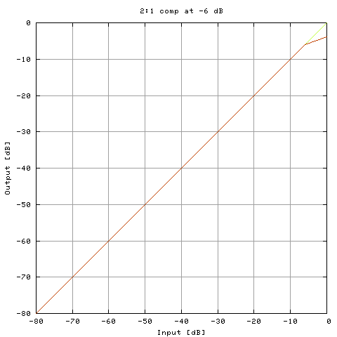 |
| 1 | 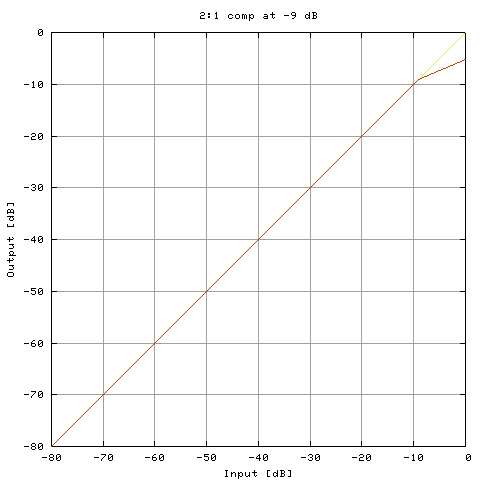 |
| 2 | 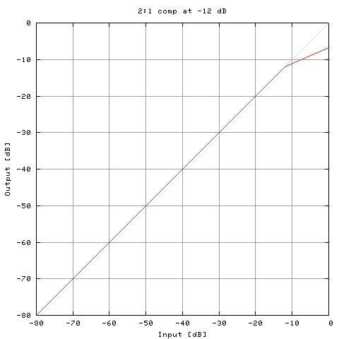 |
| 3 | 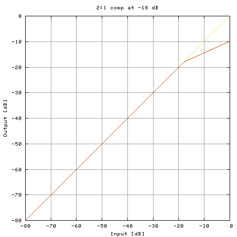 |
| 4 | 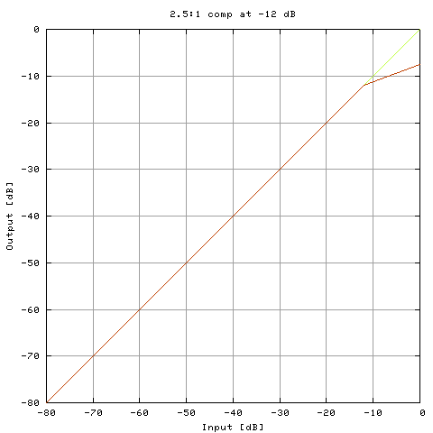 |
| 5 | |
| 6 | 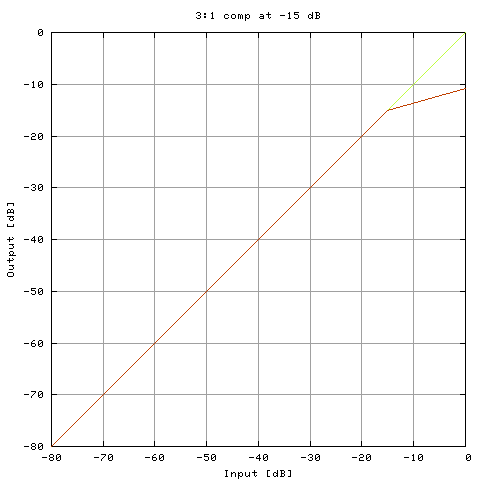 |
| 7 | 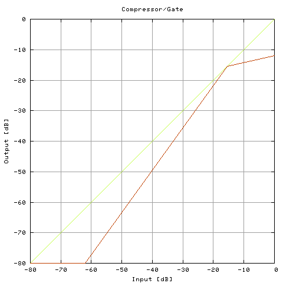 |
| 8 | 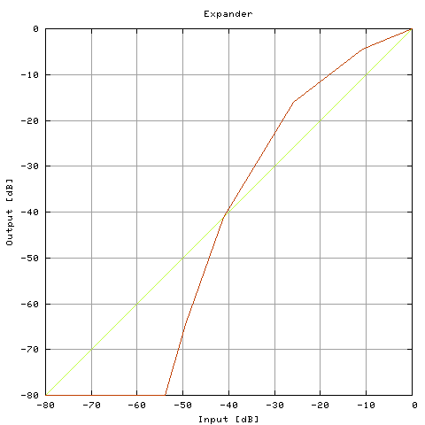 |
| 9 | 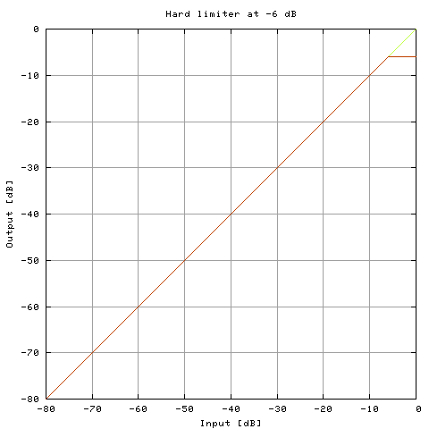 |
| 10 | 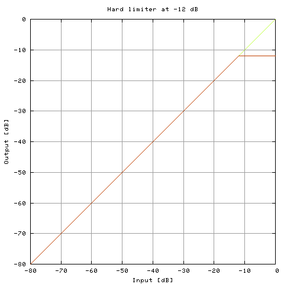 |
| 11 | 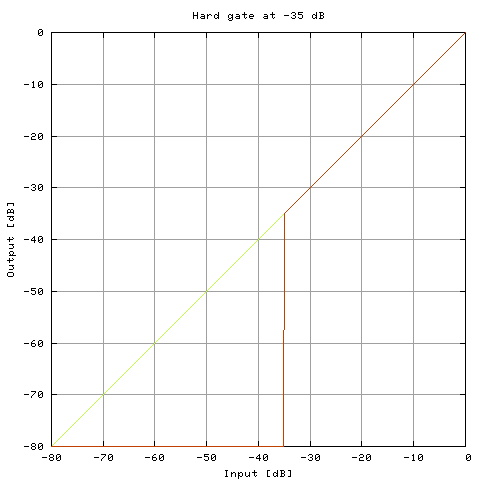 |
| 12 | 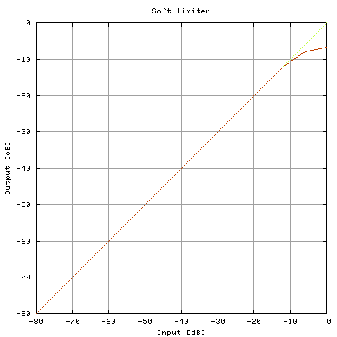 |
| 13 | 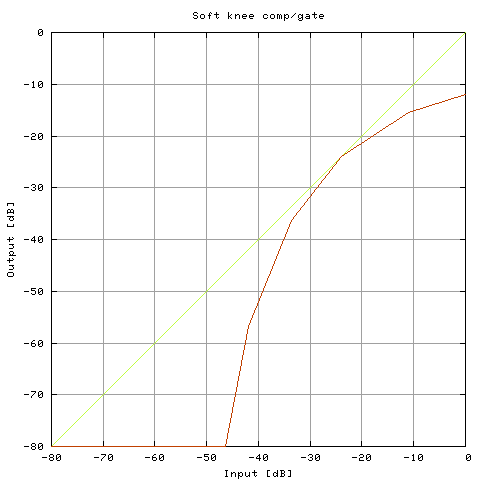 |
| 14 | 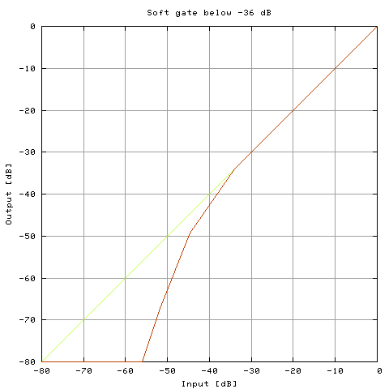 |
How to add a new dynamics functionIf you want to add a new function, here is how to do it. If you are not interested in creating your own functions, you can safely skip this boxed section. You have to specify the following parameters in order to describe a dynamics transfer function.
(a) The number of breakpoints on the input/output plane (the
maximum number is 20).
Function data is described in the file
First of all, at the top of the file you find this:
Below is an existing function, as it looks in the file. Note that
fractional numbers are given in C float format. This means that a
decimal dot is found in every number (
When you have designed a new function, all you have to do is append it
in a form shown above, to the end of
If you have developed a new preset that you think is useful, please mail it with your name and e-mail address to the author so it can be included in the next release. You will be given due credit, of course. |
| name | min. value | default value | max. value |
|---|---|---|---|
| Attack [ms] | 4 | 128 | 500 |
| Release [ms] | 4 | 502 | 1000 |
| Offset Gain [dB] | -20 | 0 | 20 |
| Makeup Gain [dB] | -20 | 0 | 20 |
| Stereo Mode [2] | Independent | Independent | Peak |
| Function | 0 | 0 | 14 |
The plugin consumes varying amounts of CPU power, depending on the exact function used. The plugin is by definition not hard RT capable, although CPU usage tends to be fairly constant. CPU metrics were measured with the function set to Expander, which is currently the most complex function.